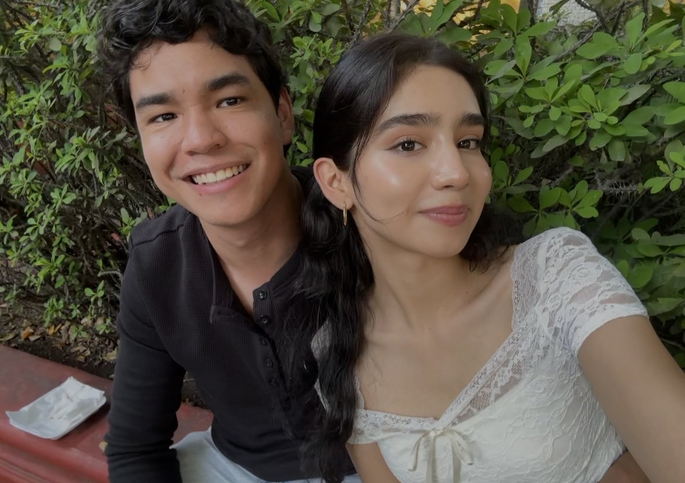
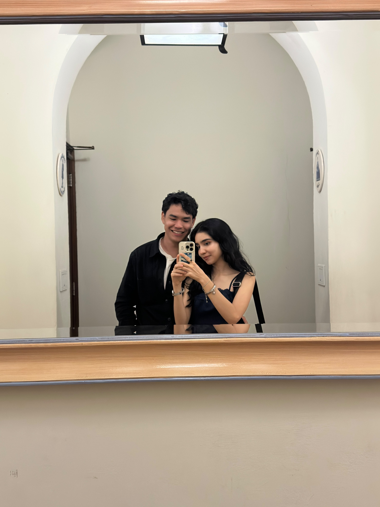

Para Sofía
Hay personas que llegan
como tú.
Una carta de Néstor, escrita para guardar una vida entera en palabras.
con todo mi amor
Una carta para Sofía
Abre tu sobre
Hay sentimientos que merecen quedarse escritos para siempre.
Para Sofía Elizabeth Núñez Gaytán,
Con amor,
Néstor
✦ Tu mensaje se guarda solo en este dispositivo.
Paso 02
Los pequeños momentos
Porque una historia de amor también vive en las fotos borrosas, los viajes improvisados y los lugares donde todo empezó.
Nuestros recuerdos


✦ Puedes subir hasta 12 fotos · Solo se guardan en tu navegador
Faltan...
Nuestro día S&N
Cada día nos acerca un poquito más.
Hay palabras que solo
aparecen cuando amas.
Pulsa el botón y deja que el azar escriba un pequeño poema para ustedes.
Nuestros lugares
El mapa de nosotros
Marca esos lugares que guardan una historia. Haz clic sobre el mapa para añadir un recuerdo.
Hecha para ser compartida, guardada y abierta una y otra vez.
♥